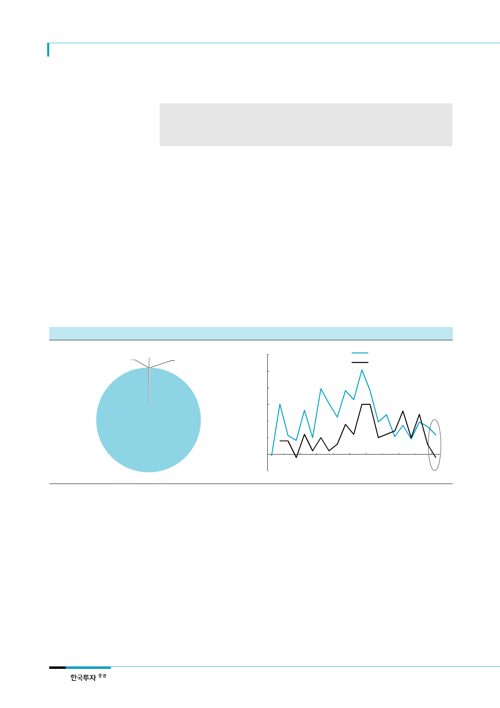

SK하이닉스(000660)
리포트 작성 목적
서버디램 수요강세의 배경과 향후 전망에 의견 제시
디램 수급 전망과 SK하이닉스 2018년 실적 추정
SK하이닉스 투자전략 등에 대한 차별화된 의견/시각 등을 제시
I. 서버 디램 수요에 대한 과도한 기대감
서버수요 약세 지속 - 인텔
DCG 매출 증가율 둔화
1. xSP업체들의 설비투자와 서버수요 간 상관관계 낮아
최근 서버디램 수요 강세의 근거로 xSP(인터넷 혹은 클라우드컴퓨팅 서비스제공업체,
Service Provider)업체들의 서버수요를 제시하는 주장이 있지만 이는 옳지 않다. 현재 전 세
계에서 판매되는 서버의 99%는 인텔의 x86 CPU를 기반으로 한다. 아마존, 구글 등의 xSP
업체가 ODM방식으로 구매하는 서버도 마찬가지다. 따라서, 서버수요와 인텔의 데이터센터
그룹(DataCenterGroup) 매출액은 상관관계가 높을 수 밖에 없고 실제로도 그렇다. 그런데
최근 인텔의 DCG 매출증가율이 둔화되는 가운데 서버수요도 약세를 지속하고 있다. 서버수
요가 약세지만 DCG 매출액이 플러스 성장세를 유지하는 것은 인텔이 서버용 CPU의 ASP를
높이고 있기 때문이다.
[그림 1] 전 세계 서버시장 CPU 종류별 점유율
IA64
0%
Other
0%
RISC
1%
자료: Gartner, 한국투자증권
x86
99%
[그림 2] 인텔 DCG 매출액, 출하량 증가율 추이
(%)
30
25
인텔 DCG 매출액 YoY 증가율
인텔 DCG 출하량 YoY 증가율
20
15
10
5
0
(5)
1Q12
1Q13
자료: 한국투자증권
1Q14
1Q15
1Q16
1Q17
클라우드컴퓨팅업체들의
설비투자와도 상관관계
높지 않아
xSP업체들의 설비투자로 서버나 서버디램의 수요를 설명하려는 주장도 있다. 이는 xSP업체
들이 대부분 소프트웨어 기반의 기업으로 생산라인이 없고 대부분의 설비투자가 데이터센터
에 대한 투자라는 점을 근거로 든다. 하지만, 이러한 주장은 설득력이 떨어진다. 우선, 서버
수요를 보자. 앞에서 언급했듯이 서버수요는 2015년 이후 약세를 지속하고 있다. xSP업체들
이 대규모 데이터센터 투자를 지속하고 있지만 일반 기업들의 서버투자가 줄어들어 전체 서
버시장 규모는 늘어나지 않고 있다. 이러한 서버수요의 구조적 변화는 2010년 중반 이후 지
속되어 전 세계 서버수요는 2015년을 제외하고는 매년 0~2%의 낮은 성장에 그치고 있다.
Amazon, Facebook, Google, Microsoft 등의 대규모 데이터센터 운용업체가 모여있는 북
미 시장의 서버수요는 이러한 변화가 더욱 극적이어서 2016년을 기점으로 이미 전체 서버수
요의 50% 이상이 이들 클라우드컴퓨팅 혹은 IDC 업체로부터 발생하고 있다.
2